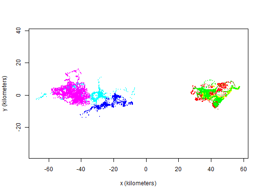

Produces simple plots of telemetry objects, possibly overlayed with a Gaussian ctmm movement model or a UD utilization distribution.
plot(x,y,...) # S3 method for telemetry plot(x, CTMM=NULL, UD=NULL, level.UD=0.95, level=0.95, DF="CDF", col="red", col.level="black", col.DF="blue", col.grid="grey", pch=1, fraction=1, add=FALSE, xlim=NULL, ylim=NULL, cex=1, lwd=1, ...) # S4 method for list zoom(x,...) # S4 method for telemetry zoom(x,fraction=1,...) # S4 method for UD zoom(x,fraction=1,...)
telemetry or UD object.ctmm movement model from the output of ctmm.fit or list of such objects.UD object such as from the output of akde or list of such objects.ctmm model or UD estimate contours to be displayed. I.e., level.UD=0.50 can yield the 50% core home range within the rendered contours.level=0.95. "PDF" or cumulative distribution function "CDF".akde bandwidth grid.ctmm, or UD range to plot, whichever is larger.TRUE will disable the unit conversions and base layer plot, so that plot.telemetry can be overlayed atop other outputs more easily.x limits c(x1, x2) of the plot.y limits c(y1, y2) of the plot.UD contours.plot.Confidence intervals placed on the ctmm Gaussian home-range contour estimates only represent uncertainty in the area's magnitude and not uncertainty in the mean location, eccentricity, or orientation angle. For akde UD estimates, the provided contours also only represent uncertainty in the magnitude of the area. With akde estimates, it is also important to note the scale of the bandwidth and, by default, grid cells are plotted with akde contours such that their length and width matches that of a bandwidth kernels' standard deviation in each direction. Therefore, this grid provides a visual approximation of the kernel-density estimate's ``resolution''.
Returns a plot of \(x\) vs. \(y\), and, if specified, Gaussian ctmm distribution or UD.
akde UD plots also come with a standard resolution grid.
zoom includes a zoom slider to manipulate fraction.
C. H. Fleming, J. M. Calabrese, T. Mueller, K.A. Olson, P. Leimgruber, and W. F. Fagan. (2014). From fine-scale foraging to home ranges: A semi-variance approach to identifying movement modes across spatiotemporal scales. http://www.jstor.org/discover/10.1086/675504
C. H. Fleming and J. M. Calabrese and T. Mueller and K. A. Olson and P. Leimgruber and W. F. Fagan (2014). Non-Markovian maximum likelihood estimation of autocorrelated movement processes http://onlinelibrary.wiley.com/doi/10.1111/2041-210X.12176/abstract.
C. H. Fleming and W. F. Fagan and T. Mueller and K. A. Olson and P. Leimgruber and J. M. Calabrese (2015). Rigorous home-range estimation with movement data: A new autocorrelated kernel-density estimator. http://www.esajournals.org/doi/abs/10.1890/14-2010.1.
If xlim or ylim are provided, then the smaller or absent range will be expanded to ensure asp=1.
akde, ctmm.fit, plot, SpatialPoints.telemetry.
# Load package and data library(ctmm) data(buffalo) # Plot the data plot(buffalo,col=rainbow(length(buffalo)))